오늘의 과제

박사오늘은 선과 지역이다. 같은 시아를 유럽 만화, 미국 코믹스, 예술 만화로 옮겨 보자.

주판봇그 나라 대표 캐릭터를 닮게 그리면 됩니다! 망토랑 근육을 붙이겠습니다!

초파리 연구원그러면 시아가 아니라 남의 캐릭터가 돼. 캐릭터는 두고 선의 규칙만 바꾸자.

시아저는 그대로인데 선만 바뀐다고요? 해 볼게요.
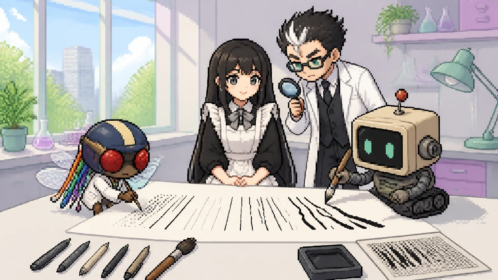
모델은 시아입니다. 주판봇은 나라마다 '대표 캐릭터를 닮게' 그리려 합니다. 초파리는 캐릭터는 시아 그대로 두고 선과 명암만 바꿉니다. 어느 쪽이 화풍을 배운 걸까요?
그림 실력·코드·수식을 몰라도 됩니다. 실험을 눌러 보며 따라오세요.
굵기가 처음부터 끝까지 같은 선(클리어 라인)과, 들어가고 나가는 곳이 가늘고 가운데가 굵은 펜선을 비교합니다

학교 수학으로 보면 — 나눗셈과 비 — 두 양의 크기를 견줍니다.
| 식 조각 | 뜻 |
|---|---|
| 1 | 굵기가 일정한 선 |
| 2~3 | 보통의 펜선 |
| 4 이상 | 붓 느낌이 강한 선 |

같은 낙서를 볼펜과 붓펜으로 따라 그려 보면, 붓펜 그림이 더 힘 있어 보이고 볼펜 그림이 더 깔끔해 보입니다.
유럽 모험 만화 계열에서는 윤곽·옷·배경까지 같은 굵기로 그려 맑은 인상을 냅니다. 소년 만화 계열은 윤곽을 굵게, 안쪽 선을 가늘게 해 인물이 앞으로 튀어나오게 합니다.


굵기 비 1은 맑고 평평한 인상, 2~3은 보통의 애니·만화, 4 이상은 붓 느낌의 힘 있는 인상입니다.
윤곽만 굵게 하고 안쪽 선을 가늘게 하면 굵기 비를 올리지 않아도 인물이 앞으로 나와 보입니다.
작업에서는 그림 한 장 안에서 굵기 비 규칙을 하나로 정하고 모든 선에 같은 규칙을 씁니다.
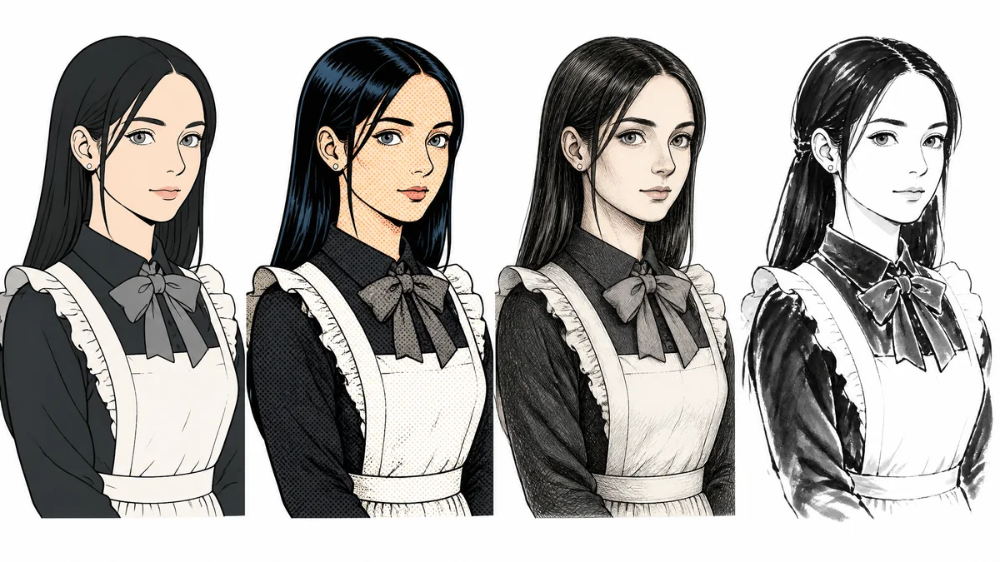
AI에게 화풍을 바꿔 달라고 했더니 한 그림 안에서 얼굴은 클리어 라인인데 머리카락은 붓선입니다. 괜찮을까요?
규칙이 섞여 어수선합니다. 'uniform line weight everywhere, ligne claire style, flat colors'처럼 굵기 규칙을 한 문장으로 적어 그림 전체에 같은 규칙을 쓰게 하세요.
같은 시아를 경계가 딱 떨어지는 평면 색, 망점 섞인 원색, 번지는 수채·회화 칠로 바꿔 봅니다
미술 시간에 색종이 콜라주와 수채화를 같은 주제로 해 보면, 같은 사람을 그렸는데 분위기가 전혀 다릅니다.
유럽 모험 만화는 평평한 색과 맑은 선, 미국 옛 코믹스는 진한 원색과 망점, 프랑스 예술 만화나 동화풍 그림책은 번지는 수채 칠과 낮은 채도를 씁니다. 같은 캐릭터를 해외판으로 옮길 때 칠 방식부터 맞춥니다.
번짐 0 + 높은 채도는 코믹스·카툰, 번짐 0 + 보통 채도는 클리어 라인, 번짐이 크고 채도가 낮으면 예술 만화·동화풍입니다.
번짐이 커질수록 선을 가늘게 하거나 줄여야 칠과 선이 어울립니다.
작업에서는 '평면/번짐'과 채도를 화풍 문장에 함께 적습니다.
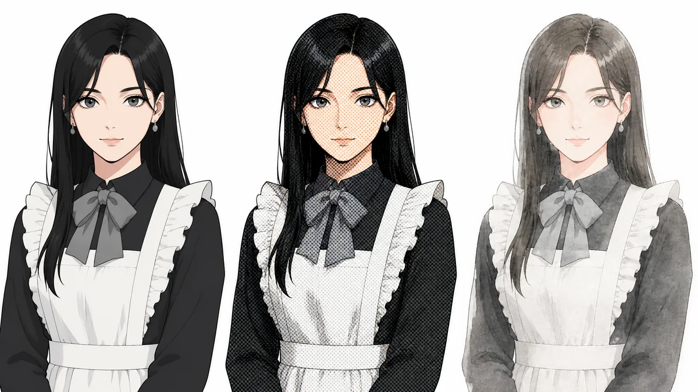
AI에게 '수채화 느낌'을 요청했더니 칠은 번지는데 선은 굵고 진한 코믹스 선 그대로입니다. 써도 될까요?
칠과 선의 규칙이 어긋났습니다. 'soft watercolor washes with thin light pencil-like lines, low saturation'처럼 선도 함께 적으세요.
얼굴과 몸을 기본 도형으로 줄이는 정도를 돌려 카툰·애니·사실주의 사이를 오갑니다
길 안내를 할 때 '큰 길에서 오른쪽, 편의점 끼고 왼쪽'만 그린 약도가 위성 사진보다 알아보기 쉬울 때가 많습니다.
TV 카툰은 얼굴을 원과 사각형 몇 개로 줄여 누구나 같은 캐릭터를 그릴 수 있게 합니다. 사실주의 그래픽 노블은 반대로 광대뼈·주름·손등 핏줄까지 그려 진지한 분위기를 냅니다.
단순화가 클수록 카툰, 작을수록 극화·그래픽 노블 쪽입니다. 애니는 그 가운데쯤입니다.
아무리 줄여도 고정값(머리 모양·색·장식)을 남기면 같은 캐릭터로 읽힙니다.
작업에서는 단순화 값을 하나 정하고, 그 값에서도 남길 고정값 목록을 따로 적어 둡니다.
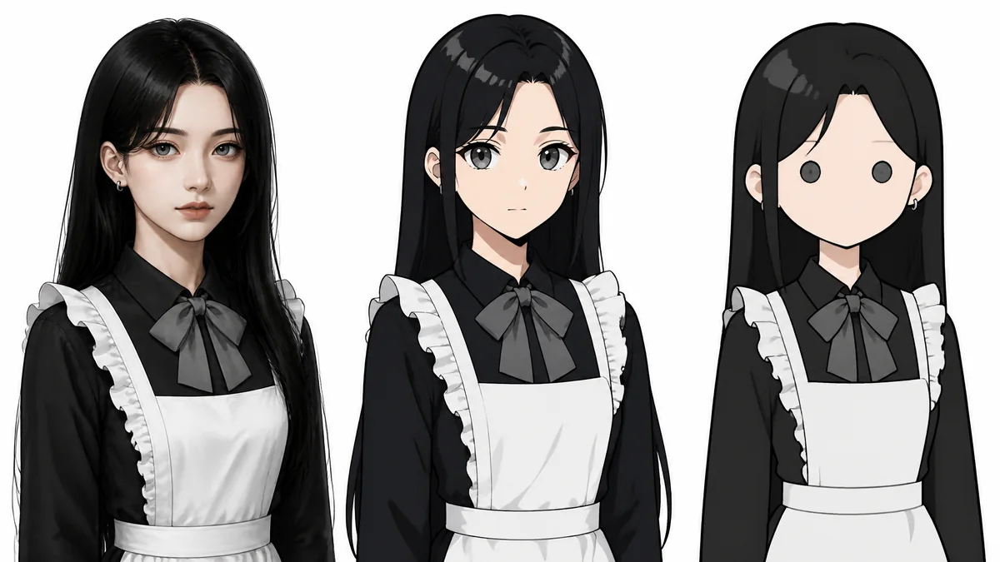
AI가 카툰풍 시아를 줬는데 손만 핏줄까지 그린 사실적인 손입니다. 괜찮을까요?
부위마다 단순화 값이 달라 어색합니다. 'simple cartoon hands with rounded fingers, same simplification as the face'처럼 손도 얼굴과 같은 정도로 줄이라고 적으세요.
인물 뒤에 집중선·속도선을 넣으면 소년 만화의 긴장, 꽃과 반짝임을 넣으면 순정 만화의 설렘이 됩니다
같은 사진도 휴대전화 편집 앱에서 '번개' 스티커를 붙이면 신나 보이고 '꽃' 스티커를 붙이면 귀여워 보입니다.
소년 만화는 인물을 향해 모이는 집중선과 굵은 효과선으로 긴장을 만들고, 순정 만화는 인물 둘레에 꽃·반짝임·부드러운 톤을 깔아 감정을 띄웁니다. 선의 굵기 비(1단계)와 함께 쓰면 장르가 분명해집니다.
집중선·속도선은 긴장과 속도(소년 만화), 꽃·반짝임은 설렘(순정 만화)으로 읽힙니다.
같은 방향의 효과(집중선 + 속도선, 꽃 + 반짝임)는 함께 써도 되지만, 반대 방향을 섞으면 감정이 흐려집니다.
작업에서는 장면의 감정 → 배경 효과 하나 → 선 굵기 비 순서로 정합니다.
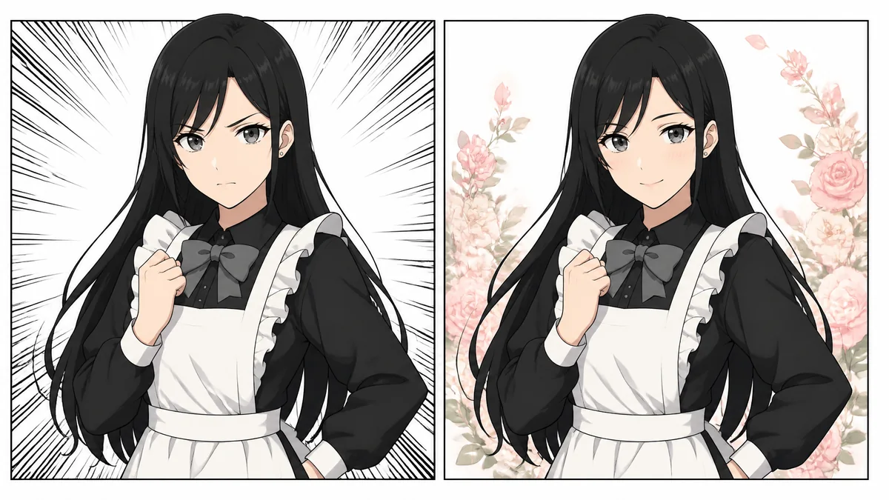
AI가 그린 액션 장면 배경에 집중선 사이로 꽃잎과 하트가 날립니다. 괜찮을까요?
긴장과 설렘이 섞였습니다. 'radial focus lines only in the background, no flowers, no hearts'처럼 효과 하나만 적으세요.
이 부에서 배운 원리를 그림 생성 AI(Genspark 등)로 직접 확인합니다. A는 이 페이지 그림을 실제로 만든 프롬프트, B는 원리를 하나 빼거나 바꾼 비교용 문장입니다.
참고 그림 내려받기: haru_anime_base · sia_anime_base · moa_anime_base · haru_sheet · sia_sheet · moa_sheet · doctor_sheet · fruitfly_sprites_6 · jupanbot_ref_genspark_v0 · pixel_style_ref_prev_cover
선 굵기·명암 처리·단순화·여백을 패널마다 다르게 적어, 작품 이름 없이 화풍이 바뀌는지 확인합니다.
첨부: moa·sia·haru anime_base와 sheet
Illustration, wide 16:9. Art style: four panels: (1) uniform-weight clean lines, flat colors, no shading (European adventure-comic look); (2) bold thick outlines, saturated primary colors, halftone dot shading (classic American comic-book look); (3) thin pen lines with cross-hatching shadows, muted realistic colors (realistic graphic-novel look); (4) black ink brush strokes with broken lines and large empty white space (East Asian ink painting look) Match the attached reference images exactly for identity (hair shape and color, eye color, accessories). All characters are adults in their twenties (the Professor is an adult man in his thirties); modest outfits exactly as described. Only the drawing style changes between panels; the person stays the same. Four chest-up portraits of the same Sia (adult maid intern, long straight jet-black hair, no headdress, gray eyes, small silver earrings), wearing charcoal-black long-sleeved maid dress, large gray bow at the collar, long white frilled apron, calm expression, same pose, side by side. Plain white background behind the panels. No text, no letters, no numbers, no calligraphy, no seals or stamps, no logos, no watermark, no revealing clothing, not childlike, no school uniform, not resembling any existing anime, comic or game character, do not imitate any specific artist or studio.
Same image, keep the same framing. Change only: use the same flat two-tone cel shading in all four panels; keep each panel's line style. Still no text.
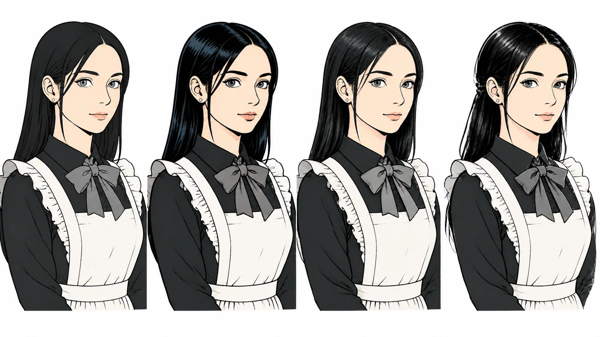
실제 결과: B에서 명암을 같게 하자 선 스타일까지 비슷해져 네 장이 거의 같은 애니풍이 됐습니다. 요청보다 크게 바뀌었지만, 명암 방법이 화풍을 얼마나 많이 가르는지는 분명히 보입니다.
같은 대화에서 차이가 약하면 새 대화에서 처음부터 만들어 보세요. 작은 변화는 도구가 원래 모양을 지키려 해 약하게 나오는 일이 많습니다.
같은 시아를 평면 색·원색 망점·번지는 수채로 칠해, 칠 방식만으로 지역 인상이 바뀌는지 봅니다.
첨부: moa·sia·haru anime_base와 sheet
Illustration, wide 16:9. Art style: three panels with the same clean line drawing but different coloring: (1) flat even colors with crisp edges, medium saturation; (2) bold saturated primary colors with halftone dot shading; (3) soft bleeding watercolor washes, low saturation, thin light pencil-like lines Match the attached reference images exactly for identity (hair shape and color, eye color, accessories). All characters are adults in their twenties (the Professor is an adult man in his thirties); modest outfits exactly as described. Only the drawing style changes between panels; the person stays the same. Three chest-up portraits of the same Sia (adult maid intern, long straight jet-black hair, no headdress, gray eyes, small silver earrings), wearing charcoal-black long-sleeved maid dress, large gray bow at the collar, long white frilled apron, calm expression, same pose, side by side. Plain white background behind the panels. No text, no letters, no numbers, no calligraphy, no seals or stamps, no logos, no watermark, no revealing clothing, not childlike, no school uniform, not resembling any existing anime, comic or game character, do not imitate any specific artist or studio.
Same image, keep the same framing. Change only: in the watercolor panel use very thick bold comic outlines instead of thin light lines. Still no text.
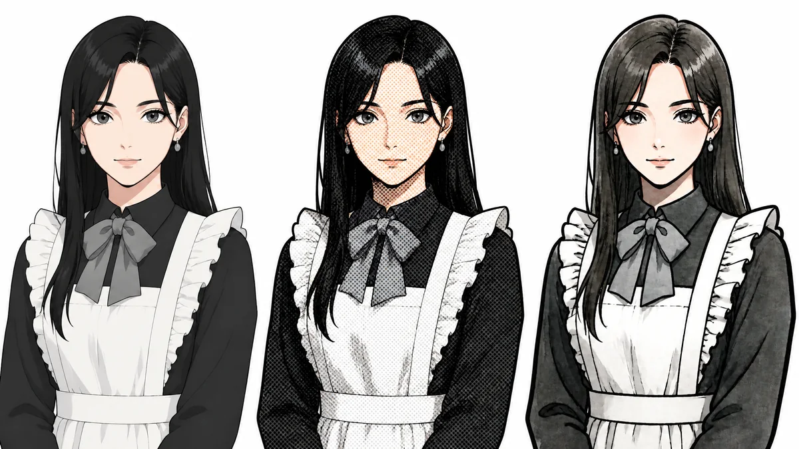
실제 결과: B의 수채 장에만 굵은 윤곽선이 들어가 칠과 선이 어긋났습니다. 요청대로 나온 비교입니다.
이 부의 원리를 내 손으로 프롬프트에 옮겨 보는 과제 3개입니다. 뒤의 과제일수록 1차 그림에서 실제로 겪은 문제(같은 대화에서 차이가 약함, 고정값이 쉽게 무너짐, SD가 어려 보임)를 피하는 방법을 담았습니다. 과제마다 목표 → 순서 → 넣을 프롬프트 → 확인할 것 → 예상 결과 → 자주 생기는 문제 순서로 적었습니다. 예상 결과 그림은 아래 프롬프트로 실제로 만든 그림입니다. 요청과 다르게 나온 곳은 '실제 결과'에 그대로 적었습니다. 결과는 매번 조금씩 다르니, 그림이 똑같지 않아도 '확인할 것'이 맞으면 성공입니다.
목표굵기가 일정한 선과 평평한 색만으로 시아를 그려 달라고 적고, 받은 그림에서 굵기 비가 1에 가까운지 확인합니다.
왜 이 연습인가화풍을 작품 이름으로 요청하면 그 작품 캐릭터의 옷과 얼굴이 섞여 나옵니다(7부 f8). 선 규칙만 적으면 시아는 그대로이고 화풍만 바뀝니다.
첨부할 참고 그림: refs/sia_anime_base.png, refs/sia_sheet.png — 참고 그림은 위 직접 만들어 보기에서 내려받을 수 있습니다.
Illustration, vertical 2:3. Art style: clean line style described by features only: uniform line weight everywhere (no thick-thin variation), flat colors, no shading or one flat shadow tone, simple clean background shapes Match the attached reference images exactly for identity (hair shape and color, eye color, accessories). All characters are adults in their twenties (the Professor is an adult man in his thirties); modest outfits exactly as described. Only the drawing style changes between panels; the person stays the same. Upper-body portrait of Sia (adult maid intern, long straight jet-black hair, no headdress, gray eyes, small silver earrings), wearing charcoal-black long-sleeved maid dress, large gray bow at the collar, long white frilled apron, walking with a calm expression. Plain white background. No text, no letters, no numbers, no calligraphy, no seals or stamps, no logos, no watermark, no revealing clothing, not childlike, no school uniform, not resembling any existing anime, comic or game character, do not imitate any specific artist or studio.
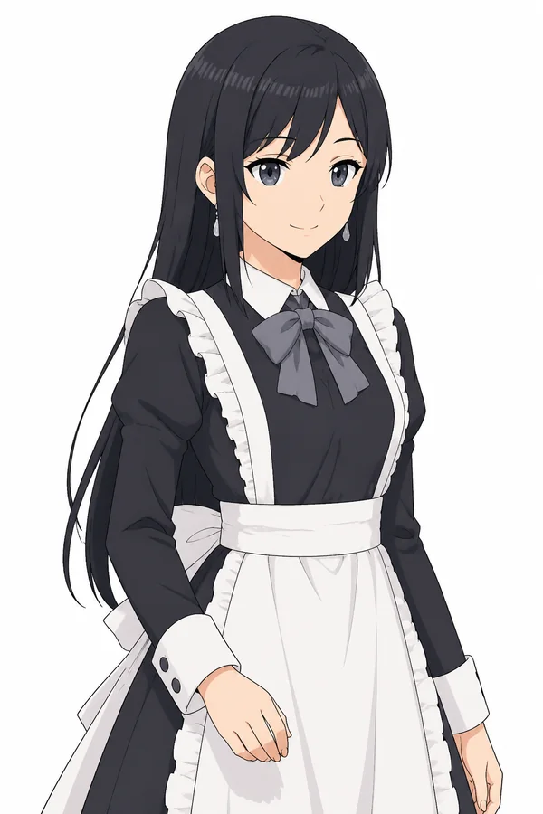
실제 결과: 성공. 굵기가 고른 선과 평평한 칠, 시아의 고정값이 모두 지켜졌습니다.
| 문제 | 이렇게 고칩니다 |
|---|---|
| 윤곽만 굵고 안쪽 선은 가늘다 | 'Same image. Change only: inner lines the same thickness as the outline.' |
| 그림자가 부드러운 그라데이션이다 | 'flat colors only, no gradients'를 덧붙입니다. |
| 다른 작품 캐릭터 옷이 섞였다 | 작품 이름을 빼고 특징만 남겼는지 확인합니다. |
더 해 보기같은 프롬프트의 선 규칙만 'bold outlines with strong thick-thin variation'으로 바꿔 굵기 비가 큰 그림과 비교해 보세요.
목표같은 시아를 집중선 배경과 꽃·반짝임 배경으로 각각 만들어, 배경만으로 장면이 어떻게 달라지는지 봅니다.
왜 이 연습인가효과선을 섞으면 장면이 흐려집니다(2부 4단계). 두 장을 새 대화 두 개에서 따로 만들고, 각 문장에 효과 하나만 적습니다.
첨부할 참고 그림: refs/sia_anime_base.png, refs/sia_sheet.png — 참고 그림은 위 직접 만들어 보기에서 내려받을 수 있습니다.
Illustration, vertical 2:3. Art style: clean modern anime illustration, confident lineart, two-tone cel shading, natural adult proportions; background: black radial focus lines converging on her only, nothing else Match the attached reference images exactly for identity (hair shape and color, eye color, accessories). All characters are adults in their twenties (the Professor is an adult man in his thirties); modest outfits exactly as described. Only the drawing style changes between panels; the person stays the same. Upper-body portrait of Sia (adult maid intern, long straight jet-black hair, no headdress, gray eyes, small silver earrings), wearing charcoal-black long-sleeved maid dress, large gray bow at the collar, long white frilled apron, determined expression, looking at the viewer. Plain white background. No text, no letters, no numbers, no calligraphy, no seals or stamps, no logos, no watermark, no revealing clothing, not childlike, no school uniform, not resembling any existing anime, comic or game character, do not imitate any specific artist or studio.
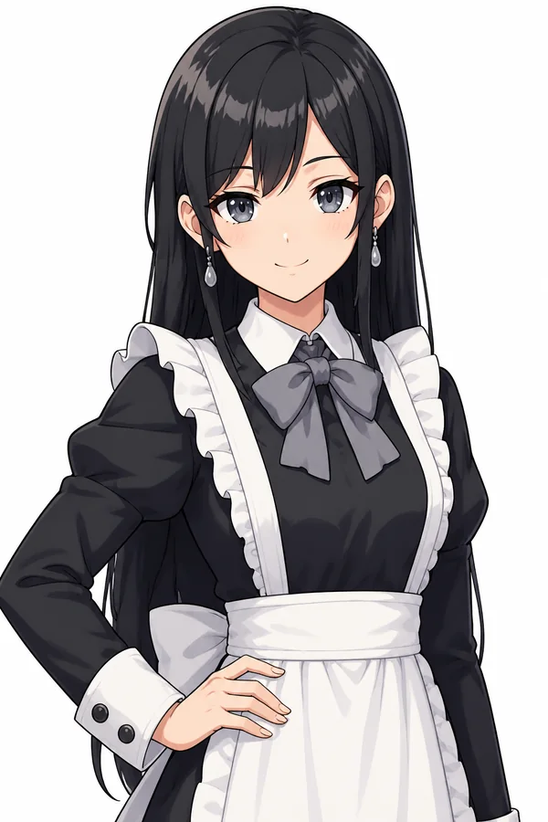
Illustration, vertical 2:3. Art style: clean modern anime illustration, confident lineart, two-tone cel shading, natural adult proportions; background: soft flowers and small sparkles around her only, nothing else Match the attached reference images exactly for identity (hair shape and color, eye color, accessories). All characters are adults in their twenties (the Professor is an adult man in his thirties); modest outfits exactly as described. Only the drawing style changes between panels; the person stays the same. Upper-body portrait of Sia (adult maid intern, long straight jet-black hair, no headdress, gray eyes, small silver earrings), wearing charcoal-black long-sleeved maid dress, large gray bow at the collar, long white frilled apron, gentle smile, looking at the viewer. Plain white background. No text, no letters, no numbers, no calligraphy, no seals or stamps, no logos, no watermark, no revealing clothing, not childlike, no school uniform, not resembling any existing anime, comic or game character, do not imitate any specific artist or studio.
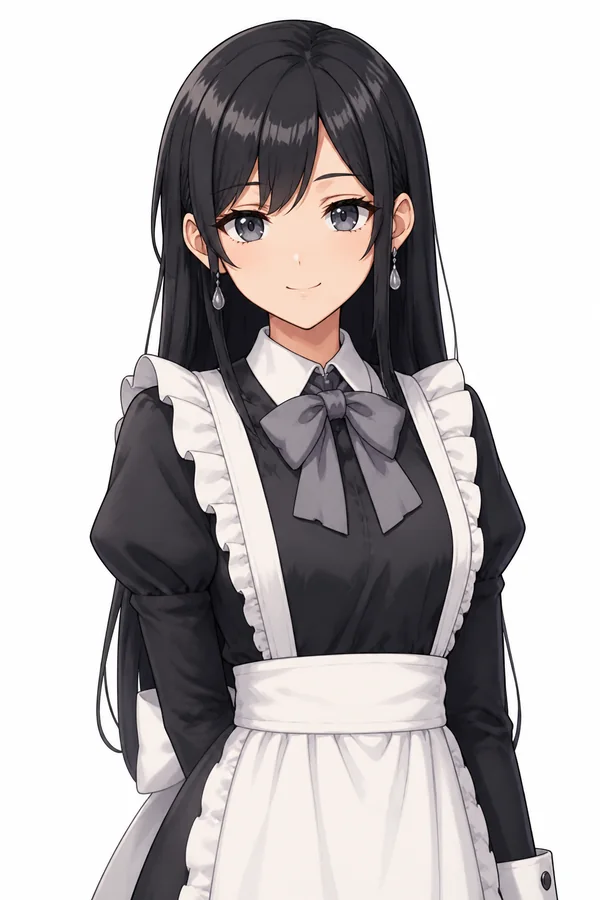
실제 결과: 실패. 두 장 모두 배경 효과선이 하나도 그려지지 않았습니다. 'Plain white background'가 함께 들어가 배경 문장과 부딪혔을 수 있습니다. 배경을 먼저 적고 흰 배경 문장을 빼면 2부 본문 그림(p2_sia_effects)처럼 잘 나옵니다.
| 문제 | 이렇게 고칩니다 |
|---|---|
| ①에 꽃잎이 섞였다 | 'no flowers, no hearts, no sparkles'. |
| 효과선이 얼굴을 가린다 | 'focus lines only in the background, face clear'. |
| 효과음 글씨가 들어갔다 | 'no text, no sound-effect lettering'. |
더 해 보기같은 두 배경을 하루에게도 적용해 보고, 캐릭터가 바뀌어도 장르 인상이 같은지 보세요.
목표시아를 기본 도형으로 아주 단순하게 줄이되, 고정값(검은 긴 생머리·장식 없음·은 귀걸이)이 남아 같은 사람으로 보이는지 확인합니다.
왜 이 연습인가단순화를 크게 하면 고정값부터 사라지기 쉽습니다. 1차 그림에서도 고정값을 적지 않은 비교 그림은 머리 모양이 바로 바뀌었습니다(5부·6부 직접 만들기 B). 남길 것을 먼저 적습니다.
첨부할 참고 그림: refs/sia_anime_base.png — 참고 그림은 위 직접 만들어 보기에서 내려받을 수 있습니다.
Illustration, vertical 2:3. Art style: very simple cartoon style made of basic shapes: round head, dot eyes, simple lines, flat colors; keep exactly: long straight black hair, no headdress, small silver earrings, the black dress with white apron Match the attached reference images exactly for identity (hair shape and color, eye color, accessories). All characters are adults in their twenties (the Professor is an adult man in his thirties); modest outfits exactly as described. Only the drawing style changes between panels; the person stays the same. Full-body figure of Sia (adult maid intern, long straight jet-black hair, no headdress, gray eyes, small silver earrings), wearing charcoal-black long-sleeved maid dress, large gray bow at the collar, long white frilled apron, standing and waving. Plain white background. No text, no letters, no numbers, no calligraphy, no seals or stamps, no logos, no watermark, no revealing clothing, not childlike, no school uniform, not resembling any existing anime, comic or game character, do not imitate any specific artist or studio.
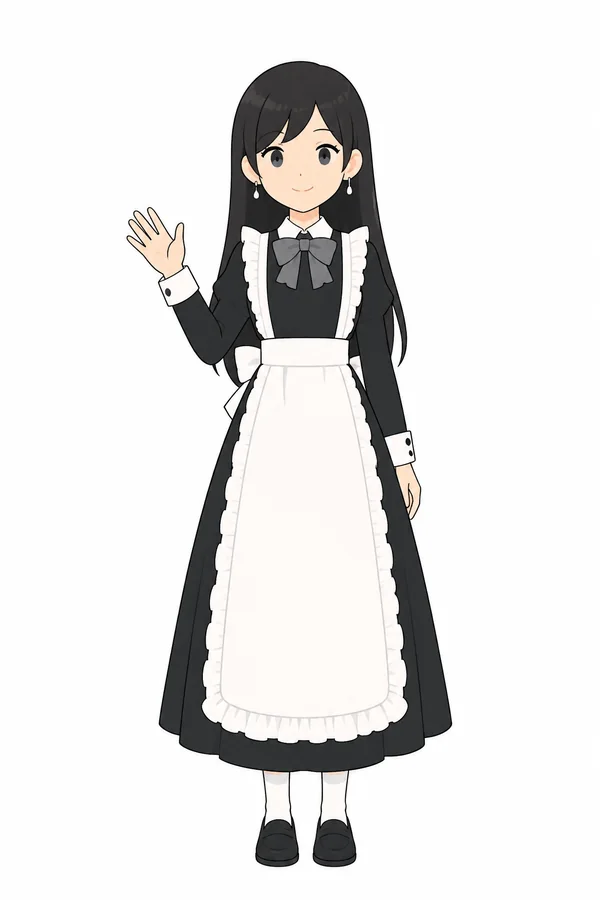
실제 결과: 부분 성공. 고정값(검은 긴 머리·귀걸이·앞치마)은 모두 남았지만, 기본 도형까지 줄이지는 않았습니다. 'dot eyes, very round head'처럼 더 크게 과장해 적어 보세요.
| 문제 | 이렇게 고칩니다 |
|---|---|
| 머리가 짧아졌다 | 'long straight black hair reaching her waist' 처럼 길이를 숫자 없이 크게 적습니다. |
| 귀걸이가 사라졌다 | 작은 장식은 단순화에서 먼저 사라집니다. 'clearly visible silver earrings'. |
| 아이처럼 보인다 | 'adult woman, cartoon style, not a child'를 덧붙입니다. |
더 해 보기같은 문장의 단순화 정도를 '반실사'로 바꾼 그림과 나란히 놓아 보세요.
| 항목 | 주판봇 | 초파리 |
|---|---|---|
| 닮음(같은 시아로 보이나) | 4 | 9 |
| 원리(선·명암 규칙을 썼나) | 3 | 9 |
| 자연스러움 | 6 | 8 |
| 합계 | 13 | 26 |


점수는 이야기 속 예시입니다. 실제 그림을 평가한 값이 아닙니다.
| 주제 | 한 줄 | 작업에서는 |
|---|---|---|
| 선 굵기 | 굵기 비 1은 맑고, 3 이상은 힘 있다 | 그림 한 장에 굵기 규칙 하나 |
| 칠 방식 | 평면 원색 ↔ 번지는 물감, 채도와 함께 | 칠과 선의 규칙을 맞춘다 |
| 단순화 | 0 사실 ↔ 1 카툰, 고정값은 남긴다 | 단순화 값과 남길 고정값을 적는다 |
| 배경 효과선 | 집중선은 긴장, 꽃·반짝임은 설렘 | 감정 하나에 효과 하나 |

이 페이지에 나온 개념·방법·비유·쓰임을 모았습니다. 검색하고, "설명 보러 가기"로 본문에 돌아갑니다.
지식 색인을 출처와 함께 파일로 내려받습니다. 서지 관리는 BibTeX·RIS, 온톨로지 편집은 Turtle, 그래프 도구는 CSV, 여러 페이지 합치기는 kg.json입니다.